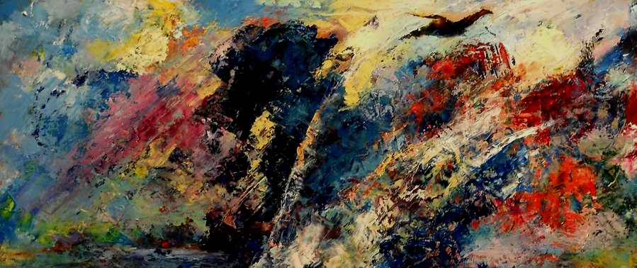

Torah and the Language of Music
If we are talking about a musical interpretation of the Torah, what musical language should we use? Should we use the musical language of that time, or does it make sense to use a language accessible to everyone, based on the European tradition?
Author: Daniel Kruglov
The Torah is an Eastern Jewish text in which every word has depth. One can look into it endlessly, finding ever new depths and revelations. When we talk about how such a text relates to music, it is important for the artist to understand where and how they touch. How do they interact with each other?
See also:
Part one: "MUSIC AND TORAH"
The musical improvisation "THE GIFT OF CREATION". Daniel Kruglov
When we speak of music as a language, we must make a reservation: in every culture music sounds different. For example, African cultures are characterised by pentatonic music in which the main element is rhythm, while European culture has the monodic church modes, which later evolved into classical tonal harmony.
If we are talking about an interpretation (by means of music) of the Torah, which came from Israel and the Middle East, what musical language should we use? Should we use the musical language of that time, or does it make sense to use a language accessible to everyone, based on the European tradition? I think contemporary culture tends to mix different styles. It seems right to me to use all these styles like colours.
We can use various currents of European music (symphonic, electronic, big beat, progressive rock, perhaps even disco), and in some cases elements and instruments of African, Japanese or Indian music, or the music of other cultures, can be used.
DANIEL KRUGLOV: a musical reflection on the weekly Torah portion "Ki Tetze". Devarim (Deuteronomy)
For example, the use of a pipe in "Ki Tetze" (Deut. 21:10–25:19) against the electronic ticking of a clock, which then turns into a deliberately synthesiser-based ballad made in the style of the sequencers of the late 1980s.
DANIEL KRUGLOV: a musical reflection on the weekly Torah portion "Vayetze". Bereshit (Genesis)
In "Vayetze" I deliberately use the instruments of Genesis's first album, as an attempt to describe Yaakov's inner experiences and his dream at Beit El (Bethel): a slow flute melody over a slightly hurried, adolescent accompaniment.
DANIEL KRUGLOV: a musical reflection on the weekly Torah portion "Devarim". Devarim (Deuteronomy)
In the portion Devarim (Deut. 1:1–3:22) the basis is symphonic music, and its whole language can be described as symphonic rock: the warm solemnity I needed, with a slight inner break and tears, was achieved precisely through the choice of style and harmonic language.
What do such games with style give us?
They develop our language so far that we can show emotional phenomena much more deeply as we reflect on the biblical text. Using such colours, we can show those areas of the Torah that we cannot express in ordinary language, something that cannot be written down or put into words.
DANIEL KRUGLOV: a musical reflection on the weekly Torah portion "Vayechi". Bereshit (Genesis)
Besides this, I use a system of symbols in my music. For example, when chord is layered on chord, it gives a feeling of a kind of expectation, of striving towards something. For instance, in Vayechi (Gen. 47:28–50:26) there are layers of chords on synthesisers that pass into gamelan (an Indonesian kind of music-making using many percussion instruments). One can create the effect of being in an uncertain state, a state of vulnerability, with a chord that Ravel loved to use in his works: the large minor ninth chord. I think this can be heard especially in the composition on the weekly portion "Naso" (Num. 4:21–7:89), where an ethnic flute echoes the harmonic texture and then arrives at the music of hope (the part with the vocalise) in a major key, where all the instruments seem to submit to this "major" mood of hope.
DANIEL KRUGLOV: a musical reflection on the weekly Torah portion "Naso". Bemidbar (Numbers)
A similar language can be found in the weekly portions "Tazria"–"Metzora" (Lev. 12:1–15:33), where at the end, as in Schumann's "The Poet Speaks", a reversed piano sound is used (the Alchemy synthesiser was used to create the effect).
DANIEL KRUGLOV: a musical reflection on the weekly Torah portion "Tazria"–"Metzora". Vayikra (Leviticus)
There is also harmonic development in the weekly portions written for piano, for example "Vayigash" (Gen. 44:18–47:27) or "Mishpatim" (Exod. 21:1–24:18).
DANIEL KRUGLOV: a musical reflection on the weekly Torah portion "Vayigash". Bereshit (Genesis)
DANIEL KRUGLOV: a musical reflection on the weekly Torah portion "Mishpatim". Shemot (Exodus)
Besides, we cannot know what exactly the language of Jewish music was at the time the Bible was written; no records have survived. Sometimes I use what we now understand as Jewish music, which was created in Eastern Europe, where Jews lived for the last few hundred years. In some cases the music of the Middle East is also used. But again we cannot know how far today it corresponds to, or is close to, the music of ancient times. We can only guess what it was really like. Most likely it was substantially different from what we have today.
For example, even the music of ancient Greece had no such concept as the octave. By modern ideas the Greeks worked with fourths. In general it is a completely different system. That is, if an ancient Greek could listen to our music, he would understand nothing. When I speak of music as a way of interpreting Scripture, I mean a language that should be understandable to as many people as possible. It is well known, for example, that American music differs from European music, even though they are not separated by millennia and the cultures are close. Though the language is in principle the same, the aesthetics are different.
When I write music, I strive for music that takes in as fully as possible the achievements of all cultures. Because if our aim is to interpret the Scriptures, that is, to make them in a certain sense more understandable, then the very language we turn to must be understandable to many. Of course, a musical interpretation, like any other, opens only a certain facet. We cannot say that this or that explanation reveals one hundred per cent of the meanings.

And I think that in the modern world musical interpretation is the most universal and effective. A person who has received a musical interpretation takes in something new for himself, even compared with what he would discover from a huge number of books and commentaries already written. On the other hand, a person receiving music is not limited by a particular fixed understanding. He can develop his impression further. He can follow some musical thought, a personal reaction, and this will help him feel Scripture as he has never felt it before.
DANIEL KRUGLOV: a musical reflection on the weekly Torah portion "Shemini". Vayikra (Leviticus)
For example, in the portion Shemini (Vayikra, Lev. 9:1–11:47) we clearly hear a sad melody, although there is nothing sad in the portion. Here it is a matter of "the tears of Moshe": this period of his life is one of waiting and of changes in his life and his person. A certain dissonance brought in by the additional instruments gives us exactly that feeling when thoughts and moods come in "waves": at a great loss, in certain circumstances that are hard for us to understand.

My musical interpretations are sometimes the immediate result of reading and reflecting on the Torah. The next time I read the same passage, my musical response to it may be completely different. And here one cannot say that one understanding was right and the other wrong. Scripture has many facets. And each of our studies and statements on the text opens a certain facet before us. These revelations and understandings of ours do not contradict one another, since they are different facets of one phenomenon. One can picture Scripture as a kind of sphere, and each of our studies as one more facet. As is well known, a sphere has no facets; or one could say that the facets making up our sphere are infinitely many.
See also:
Part one: "MUSIC AND TORAH"
The musical improvisation "THE GIFT OF CREATION". Daniel Kruglov
 Contemporary Artists Interpret the Passover Haggadah
Contemporary Artists Interpret the Passover Haggadah Bezalel the Artist: A Teacher's Heart
Bezalel the Artist: A Teacher's Heart Know BEFORE WHOM You Stand. The Pillar of Fire
Know BEFORE WHOM You Stand. The Pillar of Fire